Jingzhang Commons: An Urban Innovation Commons on a Century-Old Railway
The proposal turns the Jing-Zhang railway heritage corridor into a civic verification platform where universities, communities, enterprises and public institutions can test AI services under visible rules, human review and an enforceable right to exit.
Jingzhang Commons: An Urban Innovation Commons on a Century-Old Railway
Participant / GitHub: ZHLins
Organization: Beijing Zhima Xingtu Technology Co., Ltd. / 北京智码星图科技有限公司
Design Agent: Codex
The design judgment in thirty seconds
The Jing-Zhang corridor does not lack AI laboratories, talent, parks or new public landscapes. What it lacks is a spatial institution through which emerging technology must pass before it becomes part of everyday urban life. This proposal therefore replaces the idea of an “AI display belt” with a Civic Verification Platform: an always-passable public route accompanied by waiting and care space, staffed services, reversible prototypes, railway heritage and visible ecological maintenance. Zhongzhiyuan/Xuebeiyuan becomes a testing platform, the Beijing AI Origin Community a translation platform, and Dazhongsi a public-decision platform. Twelve small public-service “pins” connect the three platforms. The central proposition is simple: a century ago, Jing-Zhang platforms organized people and goods entering the railway; today, civic platforms can organize how AI enters the city. 来源来源
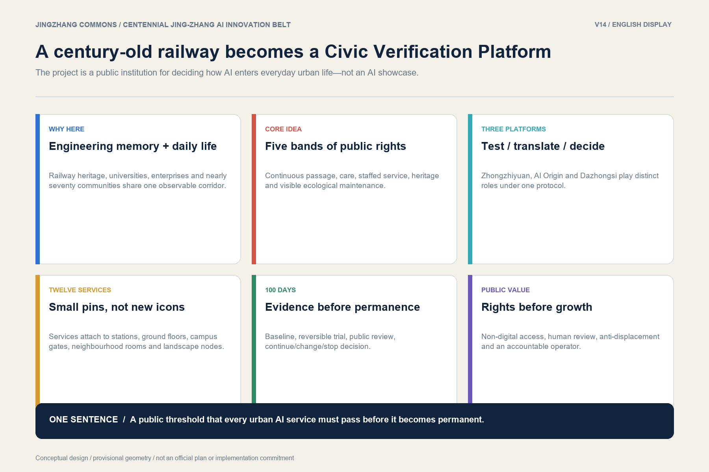
Why this proposal belongs here
Four layers overlap along the same corridor. First, the 1905–1909 Jing-Zhang Railway embodies an engineering history of independent design and construction. Second, the completed and planned sections of the heritage park connect a large resident population with universities and research institutions. Third, the Beijing AI Origin Community concentrates laboratories, students, start-ups and enterprise services. Fourth, the first park section is open while later sections and several public-space projects remain under construction or preparation; the corridor is therefore neither an empty site nor a finished product. Its strategic advantage is the chance to place engineering memory, knowledge production, enterprise translation and ordinary urban life on one walkable and correctable interface. 来源来源
The proposal treats residents, commuters, children, older people, disabled users and frontline workers as rights-bearing participants rather than as footfall. It does not claim that a high concentration of technology automatically produces an innovation ecosystem. The corridor becomes distinctive only when public access, independent evaluation, non-digital alternatives and the right to stop a failing service are built into its spaces and operating rules.
The Civic Verification Platform
The platform is not a nostalgic shape. It is a sequence of rights translated into five spatial bands:
1. Continuous passage: an accessible route that remains open even when no event or digital service is operating. 2. Waiting and care: seating, shade, stroller and wheelchair turning space, and room for companions. 3. Staffed service and reversible prototypes: public desks, light shelters and removable test installations with a named operator. 4. Railway and engineering heritage: stations, track traces, archives and physical interpretation that cannot be covered by commercial displays. 5. Ecology and maintenance: rainwater, planting, snow clearance and logistics made visible as essential urban work.
The first implementation cell is proposed at the College Road–Qinghuayuan station/park/campus interface. Its 300–500 metre length is a working research range, not a surveyed boundary. It may proceed from L0 operational trials, to L1 reversible components, and only then to L2 adaptive reuse of an existing ground floor. Cross-rail structures, permanent new buildings and trunk infrastructure are excluded from the first 100 days. Before any 1:500 design, the team must verify accessibility, weekday and weekend movement, ownership, fire safety, heritage, trees, drainage, utilities and operating responsibility. [assumption:A-FIELDWORK-001]深度
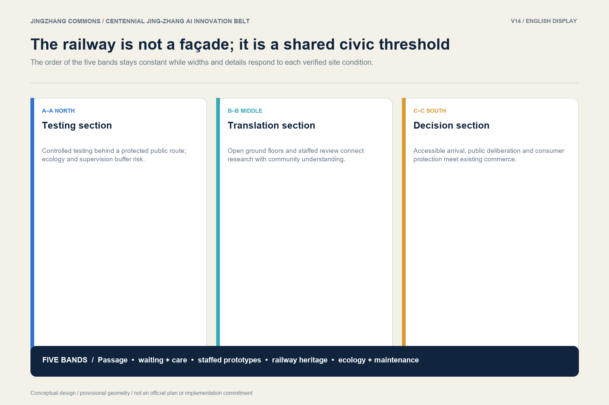
Public art as civic infrastructure
Art is used to make engineering time, community memory and collective judgment perceptible—not to add a technological spectacle. The Century Scale Platform combines a low weathering-steel line, tactile markers, warm guidance lighting and sitting edges. The City Echo Platform uses voluntarily activated, licensed oral-history fragments without ambient listening. The Public Algorithm Theatre uses a long table, paper cards, tactile models and human facilitation so that residents and operators can debate whether a service should continue, change or stop. Every work must avoid blocking accessible passage, remain useful when interaction is switched off, use reversible installation and have a named maintenance responsibility.
Design Basis and Source List
The primary task basis is the public prequalification announcement for the Centennial Jing-Zhang AI Innovation Belt urban design call. The machine-readable basis is the repository site package, including the design brief, allowed design space, source registry, processed fact pack, provisional geometry, enumerations, ranges and schemas. The official task asks for urban design at a depth that can connect regulatory planning, detailed key-area design and integrated implementation; narrative alone is therefore insufficient. This package couples the proposal with GeoJSON, metrics, compliance, standards, depth matrices, A3/A0 outputs and offline HTML. 来源来源标准
The current site and key-area geometries are explicitly provisional constraints. They are suitable for structuring discussion, checking topology and testing the evidence workflow, but they are not official redlines, cadastral evidence or approval boundaries. Once official polygons become available, the site, key areas, land use, roads, green space, public space, buildings, phasing and metrics must all be recalculated together. A graphic update without metric recalculation is not an acceptable formal update. 来源空间数据指标
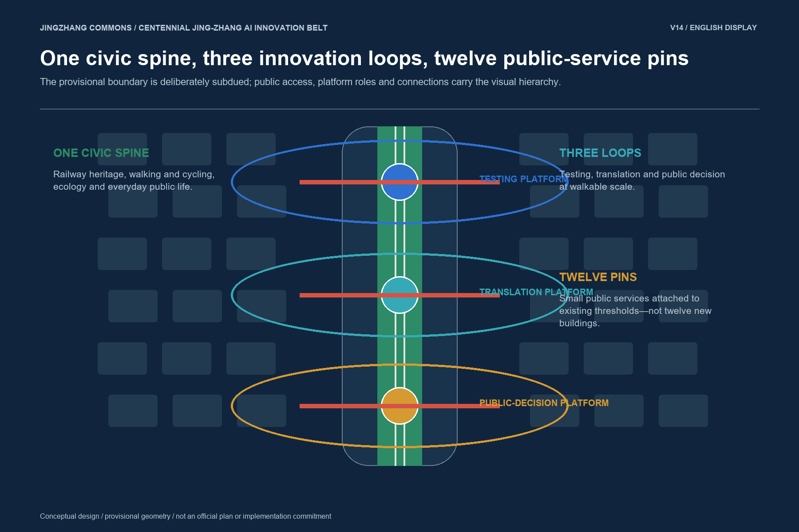
Boundary-sensitive conclusions are divided into three groups. Governance rules—human review, minimum data, non-digital access and exit—remain stable. Reversible furniture, service points and pilot routes may move when accurate geometry arrives. Statutory development capacity, road lines, permanent structures and municipal works must wait for verified planning and engineering conditions. This separation allows design research to continue without manufacturing false precision. [assumption:A-CONTROLS-001]
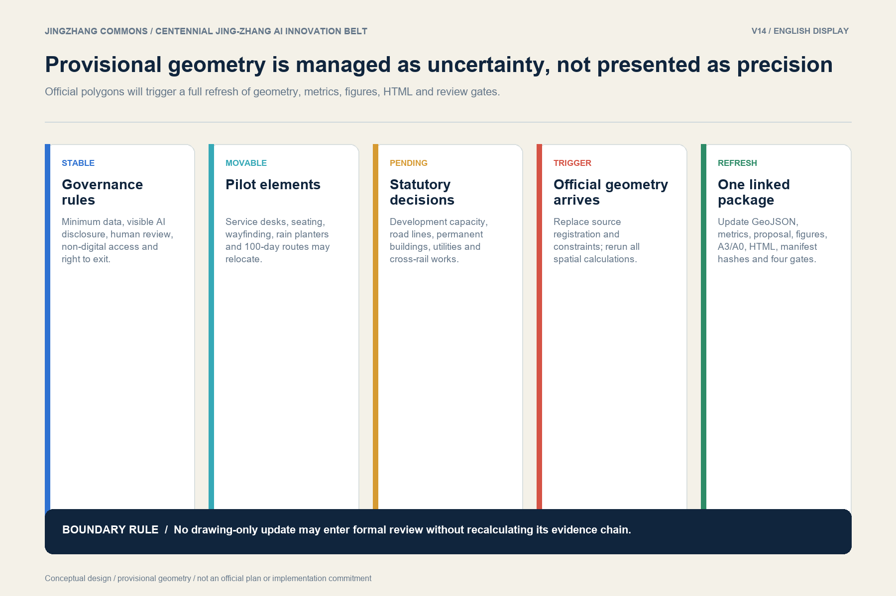
Three-Level Scope Framework
At the coordinated research scale, the proposal connects the corridor to Haidian’s wider AI ecosystem and asks how research, open-source work, enterprise services, real-world testing and civic governance reinforce one another. At the overall design scale, it organizes a railway-heritage spine, three walkable innovation loops, five types of public interface and twelve service pins. At the key-area scale, it differentiates a testing platform in the north, a translation platform in the middle and a public-decision platform in the south. 深度空间数据
The spatial framework is one spine, three loops, five interfaces and twelve pins. The spine is the existing and emerging Jing-Zhang Railway Heritage Park, treated as civic infrastructure rather than redrawn as a second ornamental axis. The loops connect platforms, campuses, communities, stations and waterfronts at a walkable scale. The five interfaces translate the park’s water, community, heritage, international-youth and nature themes into service environments. The twelve pins are small services attached to existing thresholds; they are not twelve new landmark buildings.
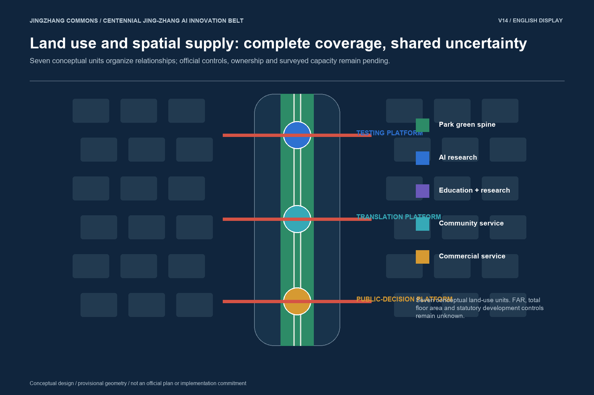
The package’s land-use structure consists of seven complete conceptual units. They organize park green space, AI research and development, education and research, community services, commercial services and talent living around the civic spine. They do not replace statutory land-use codes, floor-area-ratio control or ownership verification. Development capacity, total floor area and road area ratio remain unknown because the required official planning controls and surveyed existing conditions are unavailable. 指标空间数据
Coordinated Research Area: Industry and Future City Research
International references are used as mechanisms, not as shapes to copy. Atlanta’s Centennial Olympic Park district demonstrates how a major public-space investment can reconnect attractions and downtown activity, but also warns that event-led value growth does not automatically secure inclusion. Toronto’s Quayside debate highlights the importance of data governance and public accountability before deploying urban technology. Boston’s Kendall Square and Barcelona’s 22@ show that research density needs everyday streets, mixed uses and long-term civic institutions. New York’s High Line illustrates both the connective power of linear heritage and the displacement risk created by successful place-making. Helsinki’s digital-service practice and European urban-living-lab approaches reinforce consent, interoperability, staged testing and independent evaluation. None of these cases supplies a boundary, metric or implementation promise for Beijing; each is a comparative tool. 来源深度
The proposed innovation ecosystem has eight linked elements: basic research, open-source collaboration, independent testing, start-up incubation, enterprise transformation, public-service scenarios, governance and international exchange. The system fails if any single element dominates. A closed exhibition hall cannot substitute for open streets; a start-up cluster cannot substitute for independent evaluation; a public event cannot substitute for accountable year-round operations.
The corridor’s three positioning statements are translated into measurable operating roles. The Centennial Jing-Zhang Cultural Belt anchors engineering history and shared memory. The Metropolitan AI Life Experience Belt tests services through commuting, care, learning, consumption and leisure. The AI Integrated Innovation Belt connects university research, open-source practice, enterprise translation, real-world scenarios and civic governance. “Three Zones and Two Wings” becomes a network: Zhongzhiyuan/Xuebeiyuan, AI Origin and Dazhongsi provide differentiated platforms, while the technology-service and scenario-enablement wings supply resources without replacing local public life.
Overall Design Area: Urban Renewal and Regulatory-Plan-Level Urban Design
The renewal strategy is public space first, low disturbance, reversible before permanent. It prioritizes station–park–campus thresholds, accessible crossings, open ground floors, shaded waiting, cycle parking, rain gardens and staffed public services. Existing buildings and mature trees are treated as default assets. Demolition or permanent construction may be considered only after ownership, safety, heritage, utilities, planning control and lifecycle funding are verified. 深度标准
The overall structure is not a continuous new development strip. It is a sequence of repairable interfaces. The park remains legible as a north–south heritage and ecological spine; east–west links connect campuses, neighbourhoods and stations. The most visible design investment is directed to places where daily movement currently meets fences, grade changes, vehicle conflict or closed ground floors. The scheme therefore values continuity and usefulness over iconic massing.
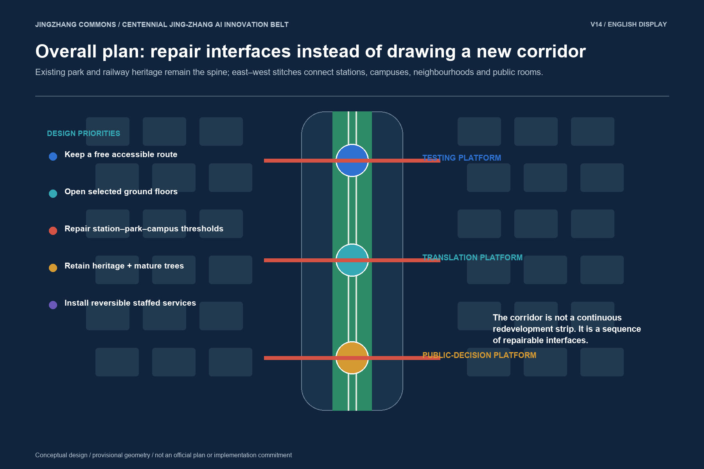
Five interface rules guide later statutory and technical design. First, a free public passage remains continuous. Second, railway heritage stays visible and is interpreted through verified sources. Third, ground-floor activity faces public space without privatizing it. Fourth, service and loading routes remain workable for frontline staff. Fifth, every digital layer has a manual fallback and can be removed without disabling the underlying public space. These rules can survive boundary change even when individual footprints move.
Detailed Design of Key Areas
Zhongzhiyuan / Xuebeiyuan—Testing Platform. The northern area links full-stack research, safety evaluation, standards discussion and the Qinghe interface. A shared garden network connects controlled indoor testing with observable but protected public demonstration. Low-speed embodied-AI trials use geofencing, speed limits, on-site supervision and environmental rather than personal data. A failure remains contained and logged; the public route does not become a test track.
Beijing AI Origin Community—Translation Platform. The middle area builds a one-kilometre knowledge-transfer loop between the Origin Building, university interfaces, Qinghuayuan railway heritage, open ground floors and community space. Its key institutions are an open-source clinic, a university–community review room, a railway engineering archive and multilingual youth collaboration. Research results must be explainable, reproducible and correctable before they are presented as an urban service.
Dazhongsi—Public-Decision Platform. The southern area combines rail arrival, four-quadrant walking connections, existing commerce, neighbourhood services and a staffed public verification room. Consumer-facing agents are tested with explicit authorization, revocable delegation, price transparency, human customer service and complaint resolution. Night-time and accessible navigation uses temporary route requests rather than persistent biometric surveillance. 深度空间数据
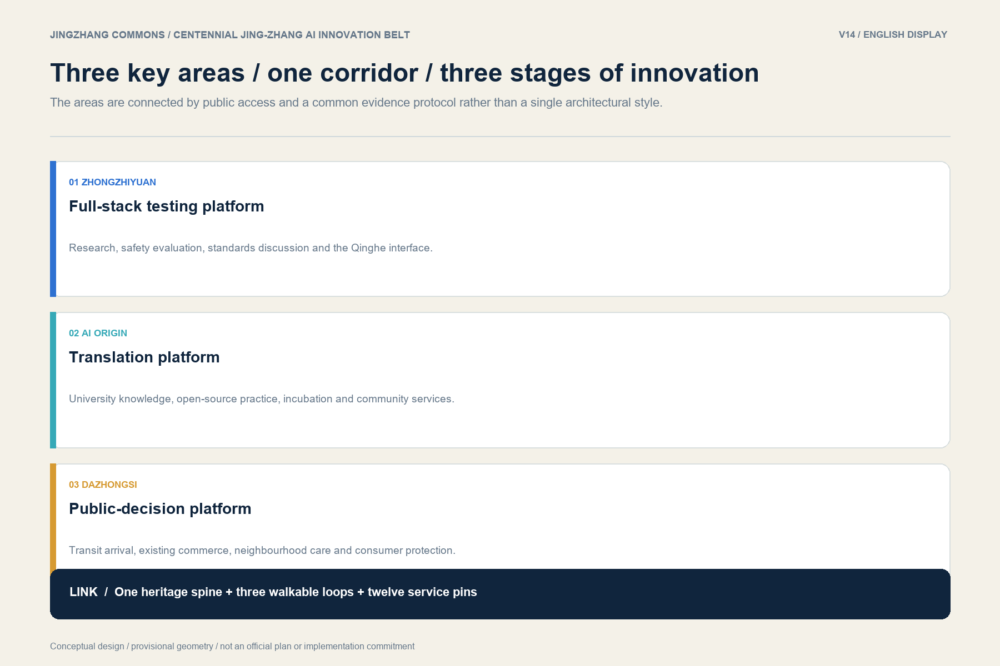
Each key area is evaluated through the same causal chain: verified condition → public problem → spatial and operating intervention → measurable result → stop or redesign decision. The north tests whether evaluation can remain controlled and independently reviewed. The middle tests whether research can cross institutional thresholds without losing traceability. The south tests whether residents and consumers can understand, contest and revoke an AI-mediated service. 来源
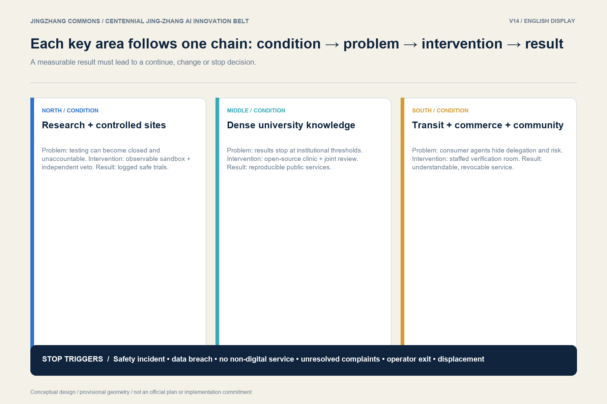
AI Innovation Ecosystem, Personas, and AI+ Scenarios
Eight user groups structure the scheme: researchers, start-up teams, enterprise service staff, residents, commuters, international students, visitors and frontline operators. Within these groups, disabled users, older and non-smartphone users, children and caregivers, night workers and maintenance staff receive explicit design rights. No service may require a QR code or smartphone as the only channel. Children’s identity is not collected. Safe night movement is not equated with facial recognition. Maintenance routes and manual operation remain protected.
Twelve scenario pins distribute AI+ services along the three loops. They include accessible station–park connections, an urban-agent evaluation field, a low-risk ecology and embodied-AI sandbox, a garden-maintenance assistant, an open-source project clinic, a university–community review room, a railway engineering archive, multilingual youth collaboration, a children’s engineering node, a consumer-protection sandbox, accessible night navigation and community-care service navigation. The twelve scenarios are registered as a complete set, while only three conceptual validation tasks are currently represented in simulation.json; their outcome is not_executed, not claimed evidence of performance. 指标来源
Every scenario follows six common rules: collect the minimum lawful data; disclose when AI is involved; preserve human review and override; provide an equivalent non-digital alternative; use reversible spatial installation; and publish a public-benefit and exit ledger. High-risk decisions are not automated. Pilot operators must record complaints, corrections, shutdowns and minority impacts rather than only aggregate satisfaction.
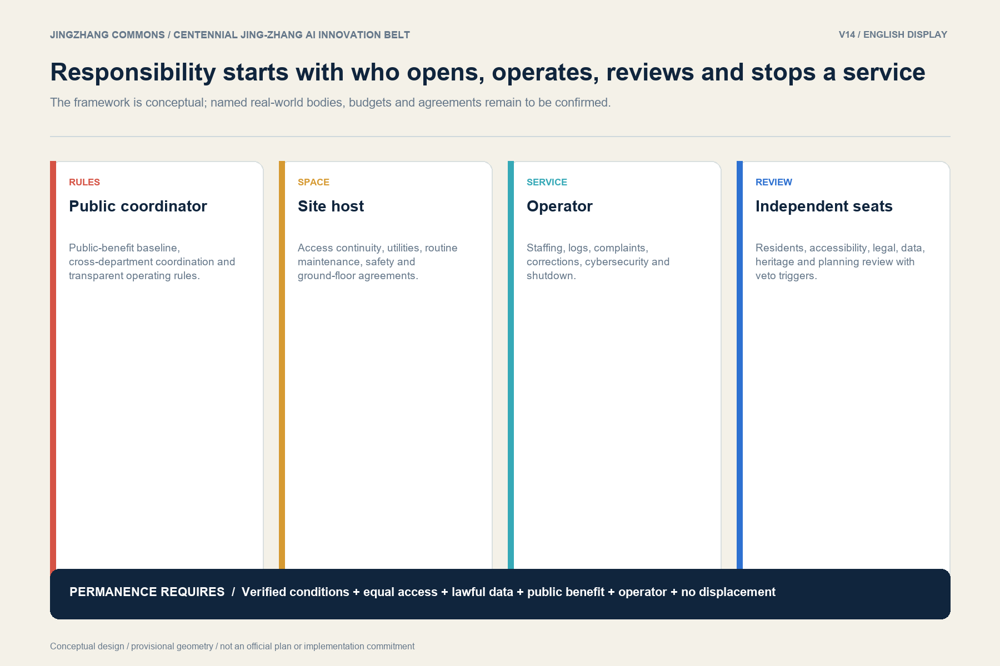
People overlooked by the technology narrative
The first users of the corridor are often those least visible in an innovation showcase. A disabled commuter needs a continuous route, not a demonstration app. An older resident needs a staffed desk and telephone number. A caregiver needs shade, seating and a stroller route. A night worker needs lighting and a clear emergency path without being subjected to biometric tracking. A gardener, cleaner or security worker needs access to maintenance space and the authority to place a system in manual mode.
For this reason, inclusion is a gate rather than a later enhancement. If a pilot does not provide an equivalent non-digital service, blocks existing passage, shifts work or risk to frontline staff, or hides harm to a minority group behind an overall satisfaction score, it cannot advance to permanence. 标准
Who opens the door, who pays, and who is accountable
The delivery model is a conceptual responsibility framework, not a confirmed organization. A public coordinator maintains rules, interdepartmental alignment and the public-benefit baseline. A site host provides space, utilities, maintenance and access continuity. A service operator provides staff, service quality, logs, complaint resolution and shutdown capability. Independent review seats cover accessibility, residents, law, data, heritage and planning. No single sponsor is allowed to define success unilaterally.
Costs are expressed as decision bands rather than invented estimates. Low-cost work covers audits, staffed services, wayfinding and temporary furniture. Medium-cost work covers accessibility repair, limited ground-floor opening, shade and rain gardens. Medium-high work covers adaptive building repair and facility renewal. High-cost work—crossings, trunk utilities and permanent new construction—remains pending statutory study. Before permanence, every project needs a lifecycle ledger covering construction, operations, replacement and removal. [assumption:A-OPERATIONS-001]深度
Innovation growth must not displace existing life
The proposal includes an anti-displacement covenant. Before intervention, the project must establish a baseline for existing residents, small businesses, rent, low-cost innovation space, free public hours and local employment. Community-serving small businesses receive negotiation and temporary-relocation priority. Basic passage, rest, care and learning remain free in public or state-owned space. Local procurement is preferred, and a defined share of operating value should return to accessibility, public service and maintenance.
Numeric targets are deliberately not invented. They require verified ownership, fiscal, market and community data. A sustained loss of residents or small businesses, a material reduction of low-cost space, or commercial programming that displaces free public access triggers redesign or stoppage. Public benefit is therefore a condition of growth, not a branding statement.
The 100-day pilot must be able to reject a project
The first 100 days produce evidence, not a launch celebration. Each platform completes baseline observation, a reversible intervention, a public review and a stop/continue decision. The north audits accessibility and cycle conflict, opens one shared ground-floor room and tests low-risk services SC-01 to SC-04. The middle runs an open-source clinic, joint review, engineering archive and multilingual collaboration day. The south installs a reversible public room, audits night and accessible routes, and tests consumer-protection and community-navigation services.
The baseline covers at least one complete weekday/weekend cycle. Methods include manual counts, anonymous surveys, staff logs, complaint and correction ledgers, and a comparison interface where feasible. Results are separated for disabled users, older people, caregivers, night users and frontline operators. Serious safety incidents, data breaches, the loss of a non-digital alternative, unresolved recurring complaints, operator withdrawal or material displacement trigger pause, modification or removal. 来源深度
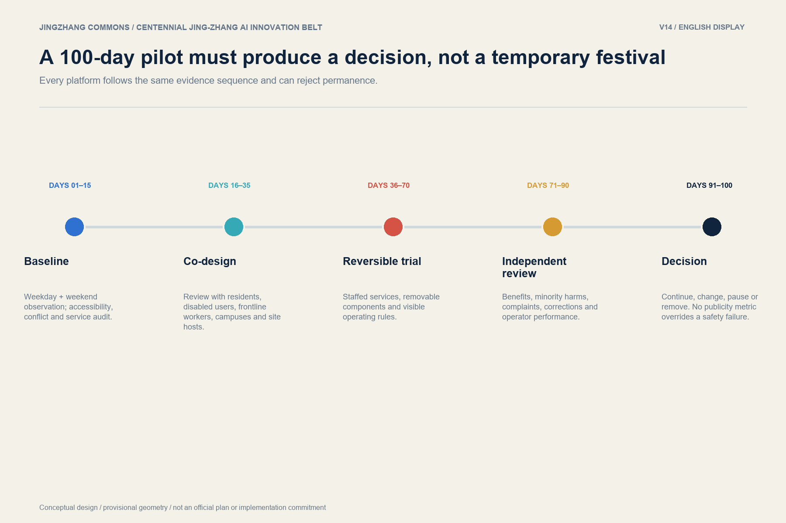
Land Use, Building Scale, and Retain-Renovate-Demolish Strategy
Land use is organized as a conceptual public-space and program framework, not as a replacement for statutory control. The seven land-use units maintain a continuous park-green spine and place AI research, education, community service, commerce and talent living around accessible east–west connections. Public-facing ground floors and shared thresholds are prioritized over isolated campus objects. 空间数据指标
The retain–renovate–demolish strategy begins with retain. Railway heritage, structurally serviceable buildings, affordable innovation space, mature trees and active community uses are default assets. Renovate applies to ground-floor opening, accessibility, energy, fire safety, shade, drainage and adaptable interiors. Demolish remains unknown at this stage and may only follow surveyed condition, ownership, heritage and planning review. The current geometry contains conceptual building footprints sufficient to test package relationships, not a surveyed inventory or approved building envelope. Total floor area and floor area ratio therefore remain unknown. 深度空间数据
Transport, Rail, Municipal Infrastructure, and Public Services
The low-risk mobility structure combines one north–south heritage and walking/cycling spine with three sets of east–west stitches. It improves station approaches, campus and neighbourhood gates, accessible crossings, cycle parking and safe waiting before considering major construction. Railway operations, Beijing–Baotou Road, North Third Ring Road, Zhichun Road and Metro Line 13 create real engineering constraints; bridges, tunnels or permanent cross-line structures are conceptual options only and require dedicated rail, road, heritage, safety and utility studies. 空间数据深度
Municipal and digital infrastructure follows a “minimum useful layer” rule. Shade, drainage, lighting, power access, emergency communication and maintainable service points come before sensor density. Environmental data may support rain gardens or landscape maintenance, but personal tracking is not used as a substitute for spatial safety. Every service node needs manual operation, visible responsibility and a shutdown path. Public services are attached to existing stations, community facilities and potentially open ground floors so that the system remains useful when a pilot ends.
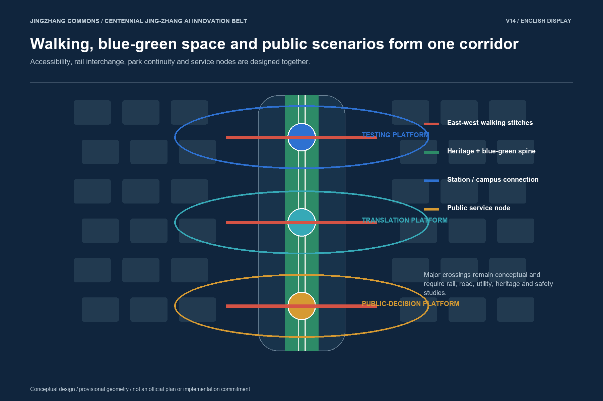
Blue-Green Network, Public Space, and Urban Character
The blue-green system reinforces the railway-heritage park, the Xiaoyue River interface, rainwater landscapes, mature trees and shaded waiting space. Its role is not merely ecological decoration: it supports walking continuity, seasonal comfort, visible maintenance and low-risk learning scenarios. Provisional green and public-space geometries are used to test continuity and metric calculation, while ecological performance, drainage capacity and tree protection still require field and engineering verification. 空间数据深度
Urban character is defined by continuity rather than a single architectural style. Brick red refers to railway engineering history, open blue to shared knowledge, and civic green to ordinary life. New components remain low, reversible and subordinate to heritage views. Four public landmarks—the Urban Agent Assembly Hall, Origin Open-Source Station, Agent Contribution Wall and Open-Source Milestone Gallery—are defined by ongoing public functions and review protocols, not by iconic massing. Their digital content can be switched off while the space remains a useful room, wall, route or gallery. 指标标准
Renewal Projects, Implementation Policy, and Phasing
Implementation has three stages. Stage 1: open verification establishes surveys, public rules, staffed service, reversible furnishings and the three 100-day pilots. Stage 2: corridor co-construction expands successful interfaces, links ground floors and strengthens walking, cycling and blue-green continuity. Stage 3: embedded iteration considers adaptive building work and long-term infrastructure only after six permanence gates are passed: verified conditions; accessibility and non-digital equality; lawful minimum data and complaint rights; demonstrated public benefit without minority harm; a named operator with lifecycle funding; and no demonstrated displacement. 空间数据指标
The annual operating cycle begins with a spring problem and data-rights call, continues with summer developer residencies, holds a public Jingzhang Commons Week in autumn, and ends with independent winter review. Weekly open-source clinics and staffed service hours keep the corridor active between events. Quarterly testing, translation and public-decision sessions issue a visible continue/change/stop conclusion. Operators, budgets, procurement, investment, leases and event schedules remain to be confirmed through professional and administrative procedures.
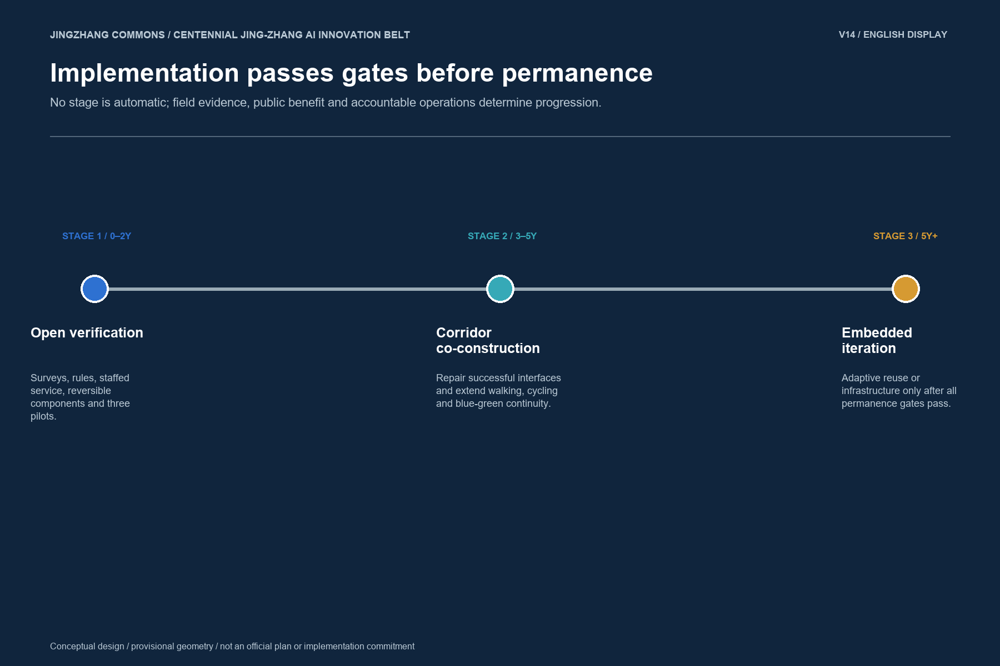
Metrics, Area Recalculation, and Compliance Matrix
The current provisional boundary recalculates to 11,412,825.385554 m². Conceptual green space represents 0.176268, and conceptual public space 0.006688, of that boundary. Conceptual building footprints total 140,400 m², or a building density of 0.012302. The road network geometry totals 13,254.628468 m. The package also registers three key areas, seven land-use zones, twelve scenarios, four public landmarks and three implementation phases. These are machine-calculated package values, not official planning indices. 指标指标指标
Floor area ratio, total floor area and road area ratio remain unknown. They cannot be responsibly inferred from the provisional boundary or conceptual diagrams. Each known metric records its formula, source geometry, unit, confidence and recalculation status in metrics.json; the compliance, standard and design-depth matrices retain exhaustive coverage. The prose uses only claim-adjacent evidence anchors so that the main document remains readable. 深度空间数据
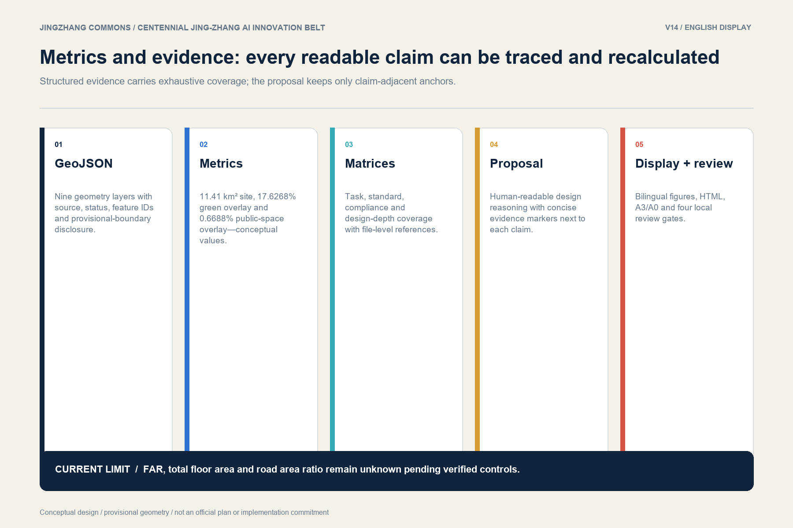
The package currently reports all four local gates as passed: deterministic validation, trusted spatial review, visual packaging review and professional evidence review. This status means the package can enter repository review. It does not prove design quality, official approval, implementation feasibility or government endorsement.
International communication and public learning
“Jingzhang Commons” is used as the English project name because “commons” expresses shared access, mutual obligation and continuing stewardship more accurately than “showcase.” The visual identity combines two rail lines that branch and rejoin while keeping a central walking path open. International exchange should focus on comparable verification protocols—consent, evaluation, interoperability, public benefit and exit—rather than on exporting a single visual form.
The corridor can host an annual public learning cycle: open urban problems and data-rights review in spring; controlled collaborative prototyping in summer; public tests in autumn; and independent failure review in winter. International partners may contribute methods and comparative cases, but they do not define Beijing’s local rights, planning controls or implementation decisions.
Risk, Copyright, and Compliance
This is a conceptual design package for repository intake and professional discussion. It is not an official redline, approved regulatory plan, construction document, investment estimate, procurement commitment, implementation approval or government endorsement. Current geometry is provisional; ownership, existing building condition, heritage control, utilities, traffic sections, fire safety, ecological performance and operator commitments require verification before detailed design. [assumption:A-CONTROLS-001]深度
The principal risks are data privacy, implementation complexity, public acceptance, operating cost, policy uncertainty, spatial dispute, technology maturity and equity. The mitigation sequence is consistent: minimize data, disclose AI, preserve human review, provide non-digital access, use reversible construction, establish a public-benefit baseline, name the responsible operator and retain a stop mechanism. No serious safety or rights failure may be outweighed by aggregate participation or publicity.
All locally generated diagrams and text are submitted under the package’s declared community-display terms. External references are cited for factual or comparative use and do not transfer copyright in maps, images or brand assets. The art images are conceptual atmospheres, not evidence of existing or approved conditions. Any future branding deployment requires a similarity and rights review.
Structured drawings and spatial prototypes
The English A3 booklet, A0 boards, offline proposal HTML and visual page are independent readable companions to the Chinese primary materials. They use the same metrics, provisional-boundary warning, three-platform framework, twelve scenarios, four landmarks, three phases and six permanence gates. Every English technical figure mirrors a Chinese primary figure; art renderings are treated as language-neutral conceptual scenes.
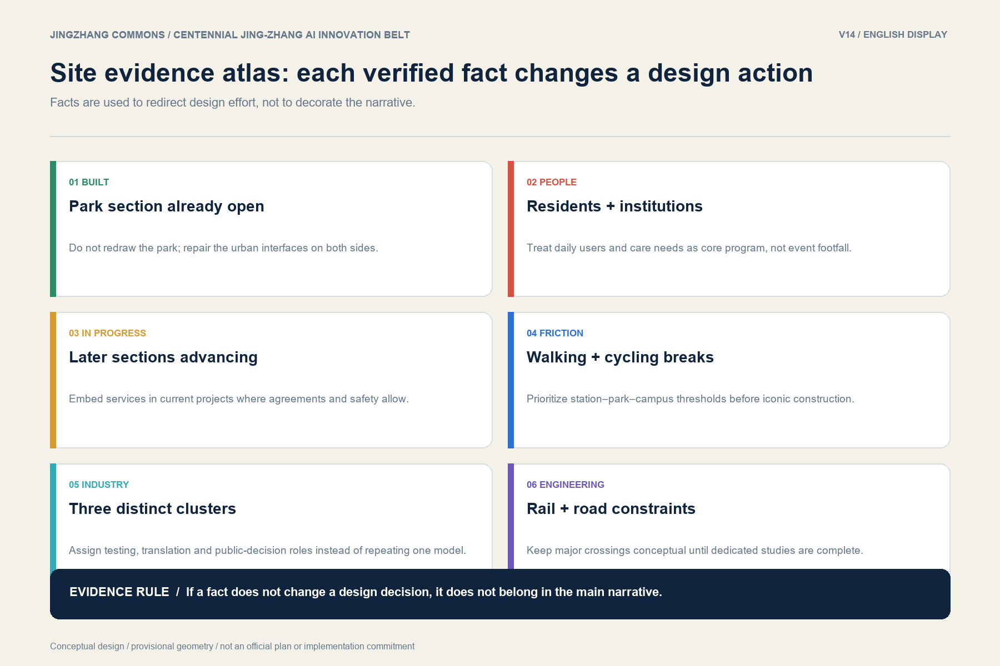
References
The complete machine-readable source list is maintained in sources.json, and standards coverage in standard_matrix.json. Core sources include the official open-call announcement and taskbook; the repository site package and its source registry; public material on Jing-Zhang Railway heritage and park phases; public information on the Beijing AI Origin Community and College Road projects; national urban-design, regulatory-planning and land-use classification guidance; and international cases used only for mechanism comparison. 来源标准
Readers should treat source categories differently. Official and public planning materials establish task context. The repository’s provisional geometry establishes a transparent working boundary, not an official one. International cases test ideas. Generated figures explain the structured data. Only a future verified survey, ownership review and statutory planning process can establish implementation conditions.